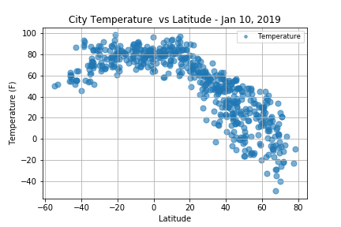

Summary : Latitude vs. X

We set out to find out how different aspects of the weather relate to the latitudes of the the Earth. As you are likely aware the Earth is round and tilted, at about 23.4 degrees, on its axis towards the Sun. We took weather data from the OpenWeatherMap API against 500 randomly selected cities across the Earth.
We then plotted different weather aspects against the latitudes of these cities using Matplotlib. Here you will be able to see a visual representation of our findings against temperature, cloudiness, wind speed, and humidty . If you wish please also take a look at the data that we collected to draw these visualizations.